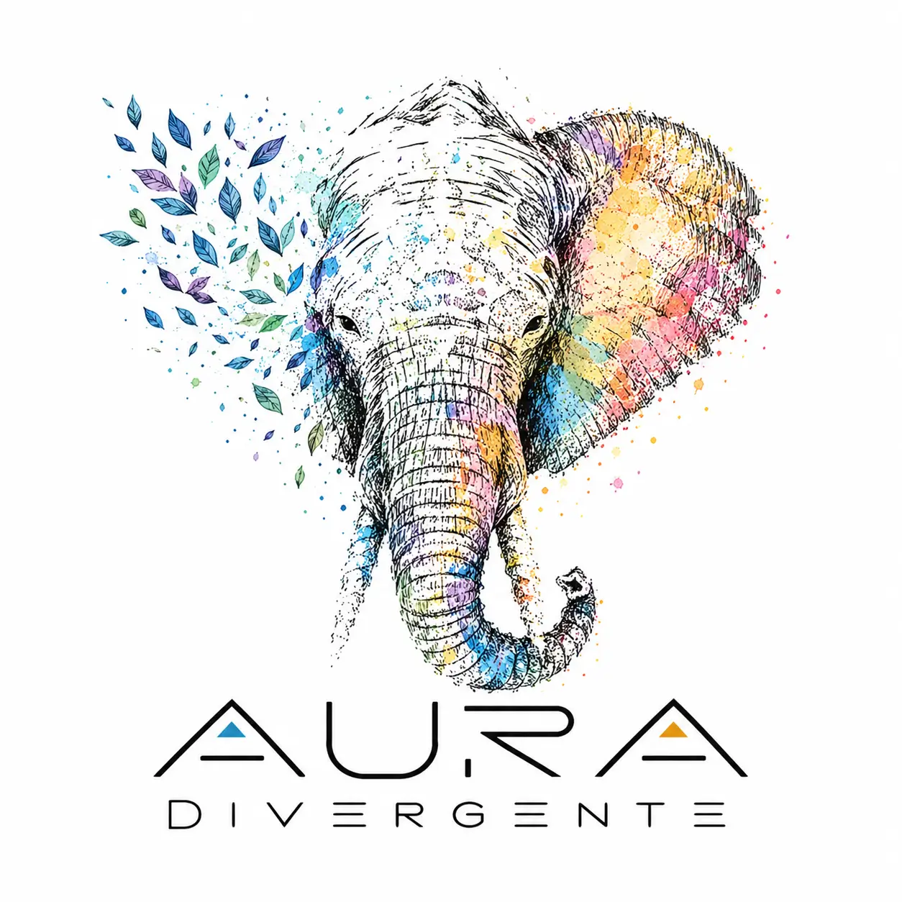

Acompañamos a familias, infancia, adolescentes y adultos con condiciones del neurodesarrollo, perfiles neurodivergentes y salud mental, desde una mirada neuroafirmativa y centrada en la persona.
San Miguel, Santiago